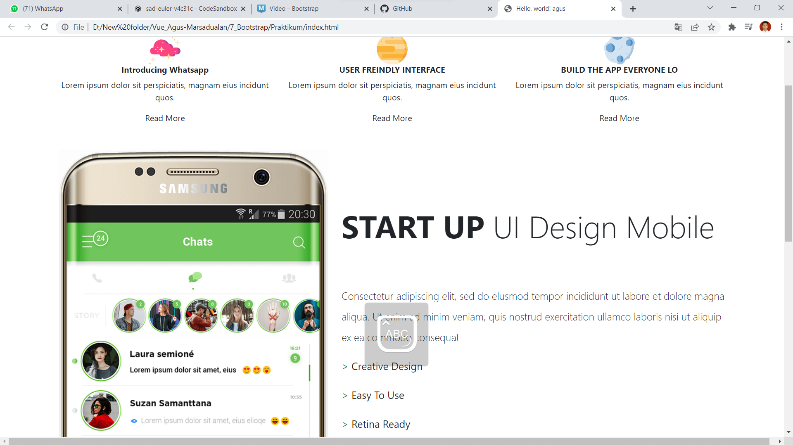
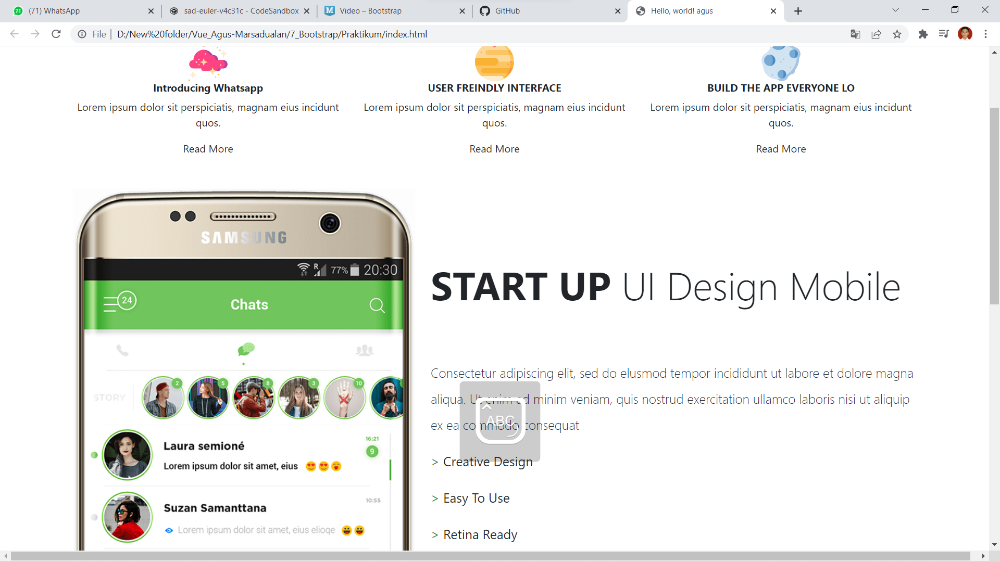

Dalam section ini mempelajari materi :
Bootstrap
Task
Screenshoot :

- Apa itu Bootstrap
- Cara menggunakan Bootstrap
- Class class didalam bootsrap
Bootstrap
Bootstrap merupakan sebuah library framework CSS yang telah dibuat khusus uintuk mengembangkan front end sebuah website. Bootstrap juga dikenal sebagai salah satu framework CSS, HTML, Javascript yang begitu populer di kalangan website developer atau pengembang website. Apa itu bootstrap dan fungsinya? yang pasti bootstrap digunakan untuk mengembangkan website agar lebih responsive.
Task
Membuat tampilan sesuai dengan ketentuan yang diberikan menggunakan bootstrap
Screenshoot :
